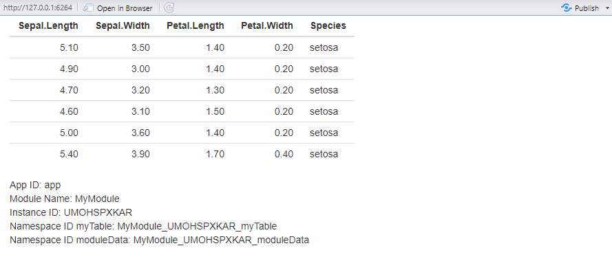
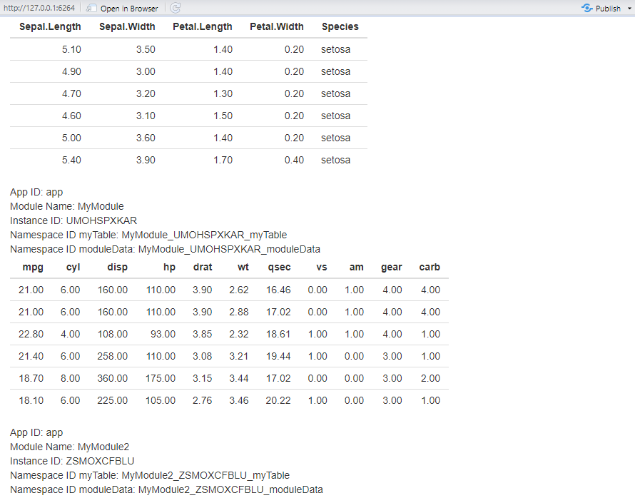
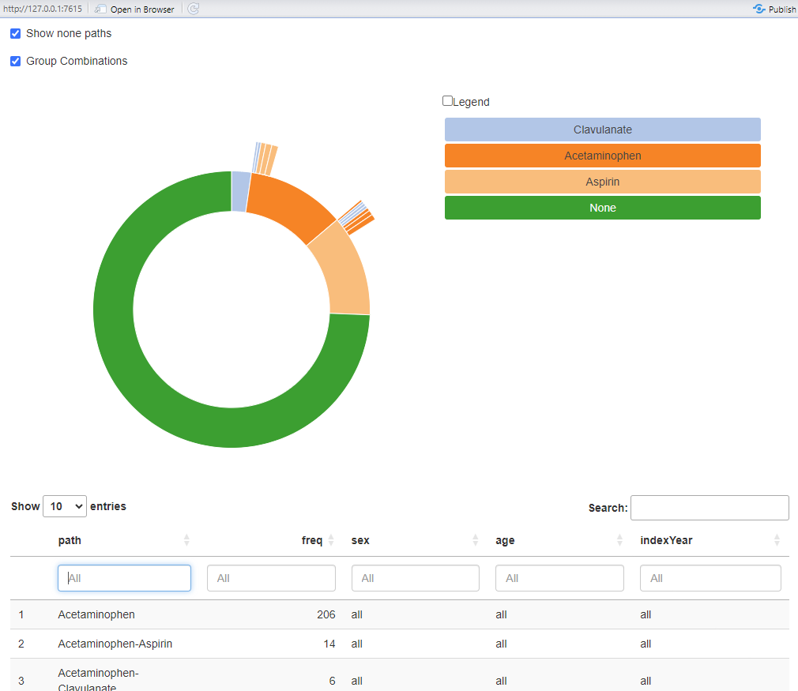

Creating a new Module
creating-a-new-module.RmdThe ShinyModule Class
The ShinyModule class is an interface to be inherited to
create modules. The module class does some simple, yet convenient
things:
- It stores the
appIdused forshiny::NS()orsession$ns(). - It stores the
moduleNameor rather the class name of the module. - It stores the
instanceIdof the class. - It enables you to use the
id()method for inherited modules. Which uses themoduleName,instanceIdand aninputIdoroutputIdto create a unique reference within the namespace. This enables multiple (duplicate) modules to use the same short-hand reference. As an example the complete reference for a table would be:app-Module_ABCDEFGHIJ_table. Whereappis the namespace of the entire ShinyApp,Moduleis the name of the module,ABCDEFGHIJis the instance ID of the instance of the module, andtableis the short hand reference to the table in theinputoroutput.
Overrides
When inheriting the ShinyModule class it is expected
that you override the UI() and / or server()
methods. The UI() method should return something akin to a
shiny::tagList(). By default they are defined, but do
nothing. This allows for just rendering simple text in a module, without
any back-end like the DarwinShinyModules::Text module. Or a
static image.
Defining a new module
The base interface of creating a new module would be this:
library(DarwinShinyModules)
MyModule <- R6::R6Class(
classname = "MyModule",
inherit = ShinyModule,
public = list(
# Override UI()
UI = function() {},
# Override server()
server = function(input, output, session) {}
)
)As you can see it is a new R6 class inheriting from
DarwinShinyModules::ShinyModule with a UI and
a server method. For a new module you can either directly
add functionality to these functions, and use private and
active fields and methods within the R6
framework. Or if you are more familiar with functions, you may want to
call your own server and ui functions in the
module, like so:
library(DarwinShinyModules)
library(shiny)
myUi <- fluidPage(
tableOutput(outputId = shiny::NS("id", "table"))
)
myServer <- function(input, output, session) {
output$table <- renderTable({
head(iris)
})
}
MyModule <- R6::R6Class(
classname = "MyModule",
inherit = ShinyModule,
public = list(
# Override UI()
UI = function() {
myUi
},
# Override server()
server = function(input, output, session) {
myServer(input, output, session)
}
)
)Let’s remake MyModule putting all the functionality
directly on the module, and see what extra funcionality and information
exists on the module. In this module I want to:
- Display the
head()of theirisdata frame, using"myTable"as theinput/outputreference. - Display the
appId,moduleName, andinstanceId, using"moduleData"as theinput/outputreference.
library(DarwinShinyModules)
MyModule <- R6::R6Class(
classname = "MyModule",
inherit = ShinyModule,
public = list(
# Override UI()
UI = function() {
shiny::tagList(
# Output a table "input$app-MyModule_ABCDEFGHIJ__myTable"
shiny::tableOutput(outputId = shiny::NS(private$.appId, self$id("myTable"))),
# Output HTML "input$app-MyModule_ABCDEFGHIJ_moduleData"
shiny::uiOutput(outputId = shiny::NS(private$.appId, self$id("moduleData")))
)
},
# Override server()
server = function(input, output, session) {
# Render the table to "MyModule_ABCDEFGHIJ_myTable"
output[[self$id("myTable")]] <- shiny::renderTable({
head(private$.data)
})
# Render the HTML to "MyModule_ABCDEFGHIJ_moduleData"
output[[self$id("moduleData")]] <- shiny::renderUI({
shiny::HTML(paste(
sprintf("App ID: %s", private$.appId),
sprintf("Module Name: %s", private$.moduleName),
sprintf("Instance ID: %s", private$.instanceId),
sprintf("Namespace ID myTable: %s", self$id("myTable")),
sprintf("Namespace ID moduleData: %s", self$id("moduleData")),
sep = "<br/>"
))
})
}
),
private = list(
# Additional private field, containing the `iris` data.frame
.data = iris
),
active = list(
# Additional active binding field, to fetch the private field .data
data = function() return(private$.data)
)
)To initialize our module object we call the new() method
on our defined MyModule:
module <- MyModule$new(appId = "app")To see what the module contains we can simply print()
the module instance:
print(module)
#> <MyModule>
#> Inherits from: <ShinyModule>
#> Public:
#> appId: active binding
#> clone: function (deep = FALSE)
#> data: active binding
#> id: function (id)
#> initialize: function (appId)
#> instanceId: MWLEFOUDVI
#> moduleName: active binding
#> server: function (input, output, session)
#> UI: function ()
#> validate: function ()
#> Private:
#> .appId: app
#> .data: data.frame
#> .moduleName: MyModule
#> finalize: function ()There are several items listed under Public: appId,
clone(), data, id()
initialize(), instanceId,
moduleName, server(), UI(), and
validate(). Note that appId,
data, instanceId, and moduleName
have a Private counter parts: .appId, .data,
.instanceId, moduleName.
We can get the active fields of our module MyModule like
so:
module$appId
#> [1] "app"
module$instanceId
#> [1] "MWLEFOUDVI"
module$moduleName
#> [1] "MyModule"
head(module$data)
#> Sepal.Length Sepal.Width Petal.Length Petal.Width Species
#> 1 5.1 3.5 1.4 0.2 setosa
#> 2 4.9 3.0 1.4 0.2 setosa
#> 3 4.7 3.2 1.3 0.2 setosa
#> 4 4.6 3.1 1.5 0.2 setosa
#> 5 5.0 3.6 1.4 0.2 setosa
#> 6 5.4 3.9 1.7 0.4 setosaNotice that if we initialize multiple instances of the same type of
module the instanceId is different per instance:
mod1 <- MyModule$new("app")
mod2 <- MyModule$new("app")
mod3 <- MyModule$new("app")
mod1$instanceId
#> [1] "EZXOMBKTYL"
mod2$instanceId
#> [1] "BFDPZCKGYI"
mod3$instanceId
#> [1] "VJUBQTAFWN"We can spin up a simple shiny app using our module:
ui <- shiny::fluidPage(
module$UI()
)
server <- function(input, output, session) {
shiny::moduleServer(id = "app", module = function(input, output, session) {
module$server(input, output, session)
})
}
if (interactive()) {
shiny::shinyApp(ui, server)
}
Multiple Modules in one ShinyApp
We can also combine multiple modules into one ShinyApp.
We can make a new module called: MyModule2 which
inherits from MyModule. I want the module to be exactly the
same, but instead of looking at the iris data, I want to
look at mtcars.
MyModule2 <- R6::R6Class(
classname = "MyModule2",
inherit = MyModule,
private = list(
.data = mtcars
)
)
# initialize a MyModule2 instance
module2 <- MyModule2$new("app")We can spin up a new ShinyApp:
ui <- shiny::fluidPage(
module$UI(),
module2$UI()
)
server <- function(input, output, session) {
shiny::moduleServer(id = "app", module = function(input, output, session) {
module$server(input, output, session)
module2$server(input, output, session)
})
}
if (interactive()) {
shiny::shinyApp(ui, server)
}
Nesting modules
Modules may be nested in other modules. For instance the
Sunburst module, is composed of the PlotWidget
and Table modules.

The Sunburst module displays a data.frame
result of the TreatmentPatterns package. The nested
Table module displays the data.frame as a
DT DataTable. The nested PlotWidget module
displays a sunburst plot as a HtmlWidget.
tp <- read.csv(system.file(
package = "DarwinShinyModules",
"dummyData/TreatmentPatterns/csv/treatmentPathways.csv"
))
sunburst <- Sunburst$new(appId = "app", tp)
ui <- shiny::fluidPage(
sunburst$UI()
)
server <- function(input, output, session) {
shiny::moduleServer(id = "app", module = function(input, output, session) {
sunburst$server(input, output, session)
})
}
if (interactive()) {
shiny::shinyApp(ui, server)
}
The nested modules do not know what data the other nested modules
holds. But the Sunburst module does, and thus does all the
data management for both modules.
DataTables from the DT package come with baked in
filters for each column. DT provides bindings to the
DataTable object to see what rows are shown, or which filters are
applied. The Table modules exposes these bindings in a
reactive context. These bindings can then be used by the
Sunburst module to change data used for the
PlotWidget module which manges the sunburst plot.